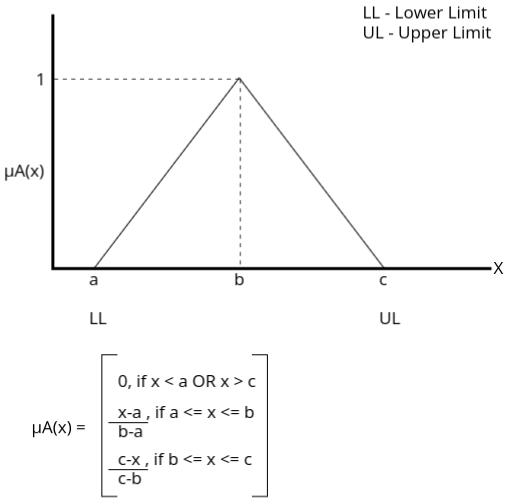
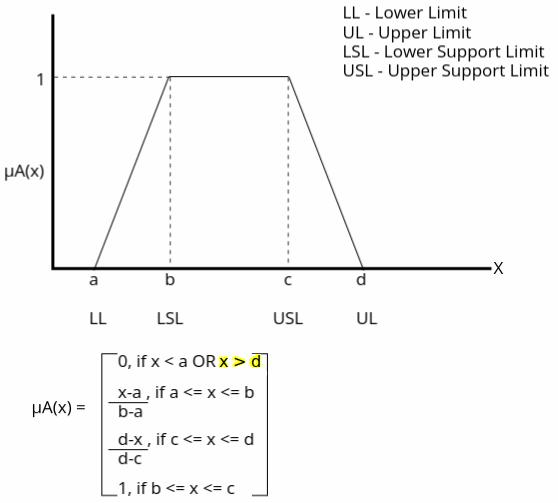
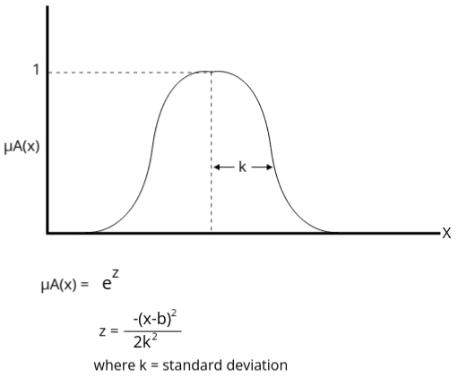
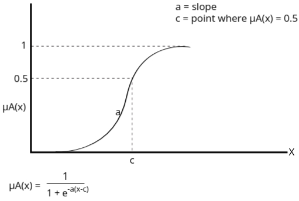

A fuzzy variable is a variable that can take on values expressed as linguistic terms rather than precise numerical values. These linguistic terms are represented by fuzzy sets.
Example: Temperature as a fuzzy variable.
Linguistic terms: {Cold, Warm, Hot}
Fuzzy sets:
- Cold: µ(x) = {1 at 0°C, 0.8 at 10°C, 0 at 20°C}
- Warm: µ(x) = {0 at 10°C, 0.5 at 20°C, 1 at 25°C, 0.2 at 30°C}
- Hot: µ(x) = {0 at 25°C, 0.6 at 30°C, 1 at 40°C}
Fuzzy variables are commonly represented using linguistic terms that correspond to fuzzy sets. These terms capture the imprecision of real-world scenarios.
Slow: µ(x) = {1 at 0 km/h, 0.7 at 20 km/h, 0 at 50 km/h}
Moderate: µ(x) = {0 at 20 km/h, 0.5 at 50 km/h, 1 at 60 km/h, 0.3 at 80 km/h}
Fast: µ(x) = {0 at 60 km/h, 0.8 at 100 km/h, 1 at 120 km/h}
Fuzzy variables are essential in modeling and solving problems where exact measurements are difficult or impossible to obtain, especially in scenarios involving ambiguity or vagueness.
Let \( X = \{a, b, c, d\} \), \( Y = \{1, 2, 3, 4\} \) and
\( A = \{(a, 0), (b, 0.8), (c, 0.6), (d, 1)\} \)
\( B = \{(1, 0.2), (2, 1), (3, 0.8), (4, 0)\} \)
\( C = \{(1, 0), (2, 0.4), (3, 1), (4, 0.8)\} \)
Here, \( X \) and \( Y \) are sets, and \( A \), \( B \), \( C \) are fuzzy sets.
Determine the implication relations:
Solution:
If \( X \) is \( A \), then \( Y \) is \( B \):
The implication relation is defined as: \[ R = (A \times B) \cup (A^c \times Y) \]
Step 1: Cartesian Product \( A \times B \)
For \( A \times B \), we calculate the minimum of the membership values of \( A \) and \( B \) for each pair:
\[ A \times B = \begin{pmatrix} \min(0, 0.2) & \min(0, 1) & \min(0, 0.8) & \min(0, 0) \\ \min(0.8, 0.2) & \min(0.8, 1) & \min(0.8, 0.8) & \min(0.8, 0) \\ \min(0.6, 0.2) & \min(0.6, 1) & \min(0.6, 0.8) & \min(0.6, 0) \\ \min(1, 0.2) & \min(1, 1) & \min(1, 0.8) & \min(1, 0) \end{pmatrix} \]
Which simplifies to:
\[ A \times B = \begin{pmatrix} 0 & 0 & 0 & 0 \\ 0.2 & 0.8 & 0.8 & 0 \\ 0.2 & 0.6 & 0.6 & 0 \\ 0.2 & 1 & 0.8 & 0 \end{pmatrix} \]
Step 2: Complement of \( A \), \( A^c \)
The complement \( A^c \) is computed by subtracting each membership value in \( A \) from 1:
\[ A^c = \{(a, 1), (b, 0.2), (c, 0.4), (d, 0)\} \]
Step 3: Cartesian Product \( A^c \times Y \)
For \( A^c \times Y \), we pair each element of \( A^c \) with each element of \( Y \) and compute the minimum of their membership values. Since \( Y = \{(1, 1), (2, 1), (3, 1), (4, 1)\} \), each element in \( Y \) has the membership value of 1:
\[ A^c \times Y = \begin{pmatrix} \min(1, 1) & \min(1, 1) & \min(1, 1) & \min(1, 1) \\ \min(0.2, 1) & \min(0.2, 1) & \min(0.2, 1) & \min(0.2, 1) \\ \min(0.4, 1) & \min(0.4, 1) & \min(0.4, 1) & \min(0.4, 1) \\ \min(0, 1) & \min(0, 1) & \min(0, 1) & \min(0, 1) \end{pmatrix} \]
Which simplifies to:
\[ A^c \times Y = \begin{pmatrix} 1 & 1 & 1 & 1 \\ 0.2 & 0.2 & 0.2 & 0.2 \\ 0.4 & 0.4 & 0.4 & 0.4 \\ 0 & 0 & 0 & 0 \end{pmatrix} \]
Step 4: Union of \( A \times B \) and \( A^c \times Y \)
We now compute the union of \( A \times B \) and \( A^c \times Y \) by taking the element-wise maximum of the two matrices:
\[ R = (A \times B) \cup (A^c \times Y) = \begin{pmatrix} \max(0, 1) & \max(0, 1) & \max(0, 1) & \max(0, 1) \\ \max(0.2, 0.2) & \max(0.8, 0.2) & \max(0.8, 0.2) & \max(0, 0.2) \\ \max(0.2, 0.4) & \max(0.6, 0.4) & \max(0.6, 0.4) & \max(0, 0.4) \\ \max(0.2, 0) & \max(1, 0) & \max(0.8, 0) & \max(0, 0) \end{pmatrix} \]
Which simplifies to:
\[ R = \begin{pmatrix} 1 & 1 & 1 & 1 \\ 0.2 & 0.8 & 0.8 & 0.2 \\ 0.4 & 0.6 & 0.6 & 0.4 \\ 0.2 & 1 & 0.8 & 0 \end{pmatrix} \]
Final Answer:
\[ R = \begin{pmatrix} 1 & 1 & 1 & 1 \\ 0.2 & 0.8 & 0.8 & 0.2 \\ 0.4 & 0.6 & 0.6 & 0.4 \\ 0.2 & 1 & 0.8 & 0 \end{pmatrix} \]
2. If X is A, then Y is B, else Y is C:
For this case, we need to compute \( R = (A \times B) \cup (A^c \times C) \), similar to the previous calculation. However, this step also includes the condition for "else Y is C" when \( X \) is not in \( A \).
Step 1: Complement of A (\(A^c\)) is the same as before:
\[ A^c = \{(a, 1), (b, 0.2), (c, 0.4), (d, 0)\} \]
Step 2: Compute \( A^c \times C \) (same as before):
\[ A^c \times C = \begin{pmatrix} 0 & 0.4 & 1 & 0.8 \\ 0 & 0.2 & 0.2 & 0.2 \\ 0 & 0.4 & 0.4 & 0.4 \\ 0 & 0 & 0 & 0 \end{pmatrix} \]
Step 3: Union of \( (A \times B) \) and \( (A^c \times C) \) (same as before):
R = (A × B) ∪ (Ac × C) = \begin{pmatrix} 0 & 0.4 & 1 & 0.8 \\ 0.2 & 0.8 & 0.8 & 0.2 \\ 0.2 & 0.6 & 0.6 & 0.4 \\ 0.2 & 1 & 0.8 & 0 \end{pmatrix}
This is the final result for the implication relation where "If X is A, then Y is B, else Y is C.
A is a fuzzy set, and x is a member of A. These features of the membership function can be understood by plotting them on a graph:
1: Triangular Membership Function
2: Trapezoidal Membership Function
3: Gaussian Membership Function
4: Sigmoidal Membership Function
This function is mainly used in ANN.
A Fuzzy Inference System (FIS) is a framework for reasoning and decision-making under uncertainty using fuzzy logic. It processes input variables and generates outputs based on a set of fuzzy rules. FIS is widely used in control systems, pattern recognition, and decision-making applications. It bridges the gap between human-like reasoning and computational systems by working with approximate information rather than precise data.
Fuzzy Inference Systems are applied in a wide range of fields to handle uncertain or imprecise data. Some real-life applications include:
The following five functional blocks are essential for constructing a FIS:
The block diagram of a Fuzzy Inference System (FIS) illustrates the flow of data through its functional components. The diagram typically consists of the following parts:
The working of the Fuzzy Inference System (FIS) consists of the following steps:
The following are the two important methods of Fuzzy Inference Systems, differing in the way they define the consequent of fuzzy rules:
The Mamdani Fuzzy Inference System is one of the earliest and most popular FIS methods. It is characterized by its use of fuzzy sets for both the antecedent and consequent of rules. The steps involved include:
The Takagi-Sugeno Fuzzy Model is designed for precise and computationally efficient outputs. It differs from the Mamdani method in the following ways:
This model is commonly used in engineering and control systems due to its efficiency and ability to handle large-scale problems.